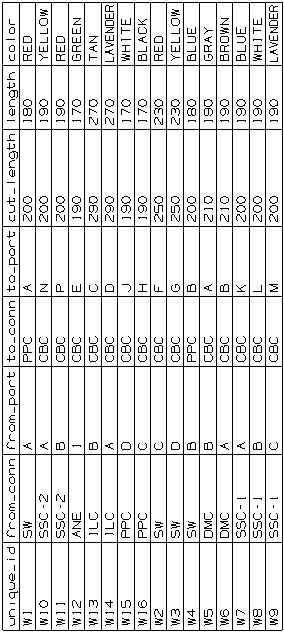
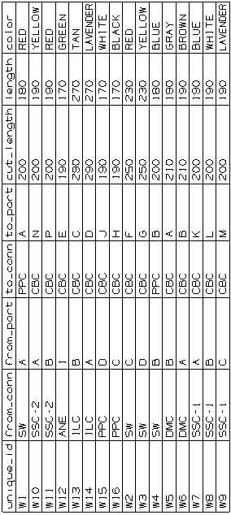

Create a Cut Sheet
-
Use the Cut Sheet Annotation
 command to produce a cut sheet configured similar to the the one below.
command to produce a cut sheet configured similar to the the one below.

-
Place the cut sheet at the lower left quadrant of the drawing sheet.
Use the Cut Sheet Annotation  command to produce a cut sheet configured similar to the the one below.
command to produce a cut sheet configured similar to the the one below.

Place the cut sheet at the lower left quadrant of the drawing sheet.